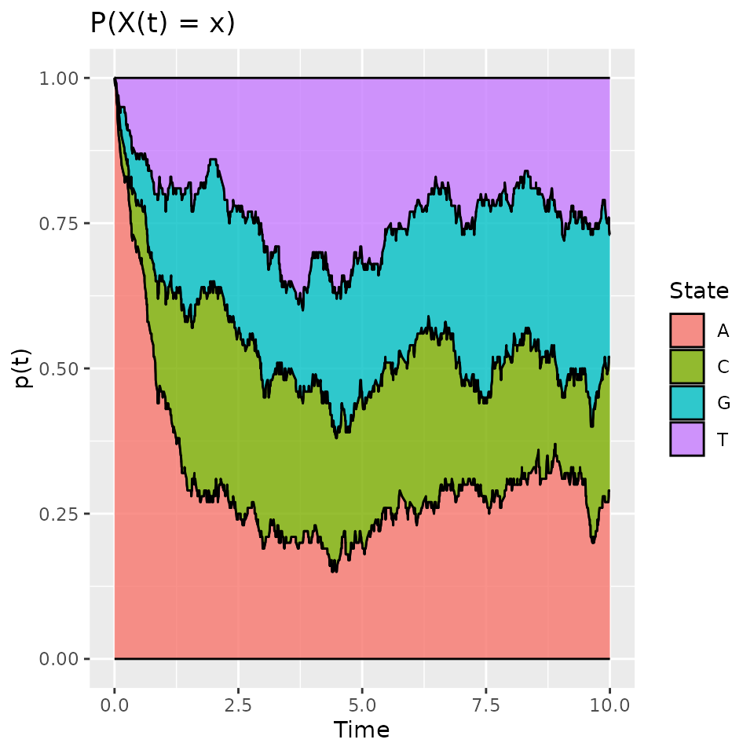
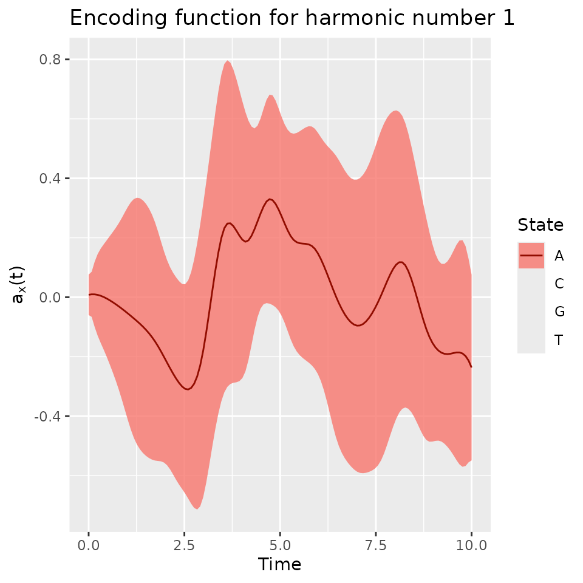

Categorical Functional Data Analysis
Cristian Preda, Quentin Grimonprez
2024-11-22
Source:vignettes/cfda.Rmd
cfda.RmdSee https://www.mdpi.com/2227-7390/9/23/3074 for more details about the mathematical background and an overview of the package.
Dataset Simulation
We simulate the Jukes Cantor model of nucleotide replacement.
Denote the set of nucleotides:
.
A DNA sequence is seen as a string of nucleotides:
ATGCATTAC.
Each in the sequence is subject to mutation over time.
In the Jukes-Cantor model (1969), each site is a Markovian jump process with continuous time having as generator:
$$ Q = \ \ \ \begin{array}{c|cccc} &A&T&G&C \\ \hline A&-3\alpha&\alpha&\alpha&\alpha\\ T&\alpha&-3\alpha&\alpha&\alpha\\ G&\alpha&\alpha&-3\alpha&\alpha\\ C&\alpha&\alpha&\alpha&-3\alpha\\ \hline \end{array}$$
for some .
Let assume that the process is observed over the period in sites with the nucleotide at time . In the following, nucleotides are recoded: , , , .
K <- 4
PJK <- matrix(1 / 3, ncol = K, nrow = K) - diag(rep(1 / 3, K))
lambda_PJK <- c(1, 1, 1, 1)
Tmax <- 10
n <- 100
d_JK <- generate_Markov(n = n, K = 4, P = PJK, lambda = lambda_PJK, Tmax = Tmax, labels = as.factor(c("A", "C", "G", "T")))
head(d_JK, 10)## id time state
## 1 1 0.0000000 A
## 2 1 0.1983368 G
## 3 1 0.2365287 T
## 4 1 1.7001558 G
## 5 1 2.1102854 A
## 6 1 2.5485099 T
## 7 1 3.2633724 G
## 8 1 3.3448084 A
## 9 1 3.4654739 T
## 10 1 4.9614496 CThe dataset is a data.frame with 3 columns: id,
time, state. id contains the id
of the different individuals (usually integers). time
contains the time values at which a change occurs, note that for each
individual, time values are ordered and start at 0. state
contains the state that appears at the given time, state must be
characters, factors, integers. This data format is used by the most part
of cfda’s functions.
summary_cfd(d_JK)## Number of rows: 1082
## Number of individuals: 100
## Time Range: 0 - 9.993531
## Same time start value for all ids: TRUE
## Same time end value for all ids: FALSE
## Number of states: 4
## States:
## A, C, G, T
## Number of individuals visiting each state:
## A C G T
## 100 98 97 92We can compute the duration of each trajectory.
duration <- compute_duration(d_JK)
head(duration)## 1 2 3 4 5 6
## 9.976904 7.812600 8.871661 8.357921 9.650790 9.993531All individuals has a different length. The computation of an optimal encoding requires that the end time of each individual is the same (), this can be done with the following function:
d_JKT <- cut_data(d_JK, Tmax = Tmax)Individuals can be plotted:
plotData(d_JKT)
Basic statistics
Generally, in categorical functional data analysis, the following basic statistics are computed.
Time spent in each state over a period of length :
For each individual, the time spent in each of the states is computed.
timeSpent <- compute_time_spent(d_JKT)
timeSpent[1:10, ]## A C G T
## 1 2.827888 0.7229735 1.929005 4.520133
## 2 3.951755 0.3545537 1.769637 3.924055
## 3 1.958321 1.1951070 6.846572 0.000000
## 4 4.718945 2.0622661 2.005165 1.213624
## 5 3.200914 0.1618662 2.296325 4.340895
## 6 4.214955 1.2124305 2.295326 2.277289
## 7 2.757877 4.3517045 1.038824 1.851595
## 8 3.826478 2.1324087 4.041113 0.000000
## 9 1.687807 2.7519813 1.208147 4.352065
## 10 4.788120 1.2389632 3.972917 0.000000The results can be plotted:
boxplot(timeSpent)Number of jumps in :
For each individual, the number of jumps occurring in is computed.
nJump <- compute_number_jumps(d_JK)
head(nJump)## 1 2 3 4 5 6
## 17 9 3 13 10 13The results can be plotted:
hist(nJump)
Probabilities to be in some state at time , :
An other interesting statistic is the evolution of the probability to be in each state.
pt_evol <- estimate_pt(d_JKT)
pt_evol$pt[1:K, 1:10]## 0 0.008 0.038 0.039 0.045 0.058 0.058 0.062 0.07 0.078
## A 1 0.99 0.98 0.97 0.96 0.95 0.94 0.93 0.92 0.91
## C 0 0.01 0.01 0.01 0.01 0.01 0.02 0.02 0.03 0.04
## G 0 0.00 0.00 0.01 0.01 0.01 0.01 0.02 0.02 0.02
## T 0 0.00 0.01 0.01 0.02 0.03 0.03 0.03 0.03 0.03
head(pt_evol$t)## [1] 0.000000000 0.007897421 0.038151747 0.038873269 0.044793148 0.058217068The output is a list with two elements: t the different
time values and pt a matrix where each row contains the
probability to be in a given state for all the time values. The result
can be plotted:
plot(pt_evol, ribbon = TRUE)
Transitions in :
The transitions between states can been studied by computing a frequency table counting the number of times each pair of states were observed in successive observation times.
statetable(d_JK)## A C G T
## A 0 110 85 105
## C 71 0 84 78
## G 72 65 0 78
## T 86 81 67 0Assuming that the data follows a Markov process, parameters (transition probability matrix) and of the process can be estimated.
mark <- estimate_Markov(d_JK)
mark## $P
## A C G T
## A 0.0000000 0.3666667 0.2833333 0.3500000
## C 0.3047210 0.0000000 0.3605150 0.3347639
## G 0.3348837 0.3023256 0.0000000 0.3627907
## T 0.3675214 0.3461538 0.2863248 0.0000000
##
## $lambda
## A C G T
## 1.062606 1.086185 1.079873 1.123472
##
## attr(,"class")
## [1] "Markov"The estimated parameters are closed to the ones used. The results can be plotted through a transition graph where each node corresponds to a state with the mean time spent within (corresponding to ) and arrows correspond to transition probabilities between states.
plot(mark)Encoding
Concept
is a continuous stochastic process with jumps. We define categorical functional data as a set of sample paths of .
cfda is seen as an extension of the multiple correspondence analysis to a stochastic process.
The idea is to find a scalar real random variable that is the most correlated to .
Mathematical Background
For a fixed , let the projection operator, Then, the correlation coefficient between and is:
For , the (simple) correspondence analysis looks for such that it maximizes and the solution is:
is called a principal component.
As an extension, the functional correspondence analysis is defined as the solution of the optimization problem:
Solution:
Denote ,
It follows that, with .
For each , the functions are called optimal encoding of the state .
The eigenvalue problem becomes in terms of encodings:
where and .
Under general conditions (continuity in probability of ), there exists positive eigen-values and eigen-functions.
The following expansion formula holds (Mercer thm.):
For , one obtains:
For the process throughout the indicators :
We are interested in approximating the encoding functions, , by
where are the expansion coefficients onto a basis of functions defined on , , .
The main result (Deville, 1982) is that is the solution of the following eigen-value problem:
where and the matrix defined by: with the random variables and defined by:
Application
Firstly, a basis of functions must be defined. We choose a B-splines basis of order 4.
m <- 20
basis <- create.bspline.basis(c(0, Tmax), nbasis = m, norder = 4)The optimal encoding is computed using:
fmca <- compute_optimal_encoding(d_JKT, basis, verbose = FALSE)
summary(fmca)## #### FMCA
##
## ## Data
## Number of individuals: 100
## Number of states: 4
## Time Range: 0 to 10
## States: 1 2 3 4
##
## ## Basis
## Type: bspline
## Number of basis functions: 20
##
## ## Outputs
## Eigenvalues:
## 1.979971 1.87976 1.645708 1.497216 1.370031 1.316879
##
## Explained variance:
## 0.078 0.152 0.217 0.276 0.33 0.382
##
## Optimal encoding:
## A C G T
## [1,] 0.008180893 -0.58909343 0.4766992 -0.40020013
## [2,] 0.014515597 0.52566581 -0.6950777 0.17637761
## [3,] -0.009084061 -0.37942555 0.3985981 -0.02443008
## [4,] -0.069652888 -0.67642599 0.3465354 0.57931109
## [5,] -0.137618298 -0.14330188 0.2425508 0.40511150
## [6,] -0.309208593 0.05087257 -0.1190275 0.32635795
##
## Principal components:
## [,1] [,2] [,3] [,4] [,5] [,6]
## 1 0.3704565 -0.7461855 -2.3826967 -0.817332429 0.06146912 -0.04419096
## 2 0.6649154 -1.0872446 -1.8537400 0.007899832 -0.12504207 0.22016509
## 3 -3.8819516 1.2971014 0.4180643 -0.183369945 0.75743237 0.31311758
## 4 1.0941084 0.2797036 -0.6957583 1.762177272 0.54104766 2.23782009
## 5 0.1747660 -2.4542637 -1.5757551 -0.288176353 -0.70892187 0.30844587
## 6 0.1038436 1.1451010 -1.5909369 0.362205655 -0.75526301 -0.73604342
##
## Total elapsed time: 92.546 sBy default this function computes bootstrap estimates of the encoding
functions in order to have a confidence interval. This is controlled by
the computeCI arguments. The output is a list containing
the different elements computed during the process:
eigenvalues, pc, alpha,
F, G, V and
basisobj. Note that alphacontains the
coefficients of the different encoding functions and pcthe
principal components. These components can be used with classical
statistic methods (k-means, regression…).
The eigenvalues can be computed using:
plotEigenvalues(fmca, cumulative = TRUE, normalize = TRUE)
The first encoding function coefficients ’s:
print(fmca$alpha[[1]])## A C G T
## [1,] 0.008180893 -0.58909343 0.47669920 -0.400200126
## [2,] 0.014515597 0.52566581 -0.69507769 0.176377614
## [3,] -0.009084061 -0.37942555 0.39859810 -0.024430084
## [4,] -0.069652888 -0.67642599 0.34653541 0.579311087
## [5,] -0.137618298 -0.14330188 0.24255075 0.405111498
## [6,] -0.309208593 0.05087257 -0.11902753 0.326357951
## [7,] -0.345337542 0.34510999 -0.01194049 0.059414703
## [8,] 0.411515257 0.18633306 -1.01542291 -0.004035332
## [9,] 0.066499135 0.38956072 -0.75060425 0.169082665
## [10,] 0.442805356 0.32496793 -0.64164483 0.058034297
## [11,] 0.137025350 0.66080911 -0.88516584 -0.033464535
## [12,] 0.221128180 0.59734105 -0.61281881 -0.226002336
## [13,] -0.023061199 0.41607362 -0.56939698 -0.137096230
## [14,] -0.136462856 0.75635141 -0.34679873 0.019760886
## [15,] -0.004898823 -0.45158932 -0.17783513 0.687183675
## [16,] 0.211932955 0.14230107 -0.31096835 0.028668625
## [17,] -0.164553063 -0.25713493 -0.23598583 0.760837273
## [18,] -0.208792890 0.08073523 0.02635330 0.104904414
## [19,] -0.166480097 -0.27899968 -0.25899954 0.692396872
## [20,] -0.236574942 -0.06124286 -0.02169858 0.379020810The resulting encoding can be plotted:
plot(fmca)## Warning: Removed 3 rows containing missing values or values outside the scale range
## (`geom_line()`). or extracted as a fd object (or matrix):
or extracted as a fd object (or matrix):
encoding <- get_encoding(fmca, fdObject = TRUE)Note that the first encoding mainly oppose the G state (in negative values) to other states. So, on the first component, individuals with a large negative values will tend to spend time in the G state after time 2.5.
By default, it plots (and returns) the first encoding functions.
Other encoding can be accessed with the harm argument.
A confidence interval can be plotted using the addCI
argument:
plot(fmca, addCI = TRUE, coeff = 2, states = "A")
Plot the two first components:
plotComponent(fmca, comp = c(1, 2), addNames = TRUE)
We can see that the individuals 3 and 14 have extreme ngative values for the first component and are opposed to 67 and 84. By plotting them, we can check the statement made on the first component meaning.
The components can be used for some other tasks such as clustering, predicting,…
Reconstruct indicators
With the encodings, the indicators can be reconstructed as follows:
indicators <- reconstructIndicators(fmca)## [1] "Reconstruct data using 60 components (out of 80)"
head(indicators)## time id stateA stateC stateG stateT state
## 1 0.000000000 1 1.231208 5.258831e-05 0.06839379 -0.2284427 G
## 2 0.007897421 1 1.216876 5.248673e-05 0.07177822 -0.2270982 G
## 3 0.038151747 1 1.123116 4.903944e-05 0.08600745 -0.2066952 G
## 4 0.038873269 1 1.120306 4.888438e-05 0.08636713 -0.2058505 G
## 5 0.044793148 1 1.096537 4.746114e-05 0.08934315 -0.1981844 G
## 6 0.058217068 1 1.038911 4.316210e-05 0.09619778 -0.1755988 G
iInd <- 3
plotData(d_JKT[d_JKT$id == iInd, ])
plotIndicatorsReconstruction(indicators, id = iInd)We see that the reconstructed indicators gives the same inforamtion as the true ones. Using more basis functions for computing encoding or other basis can improve the approximation.